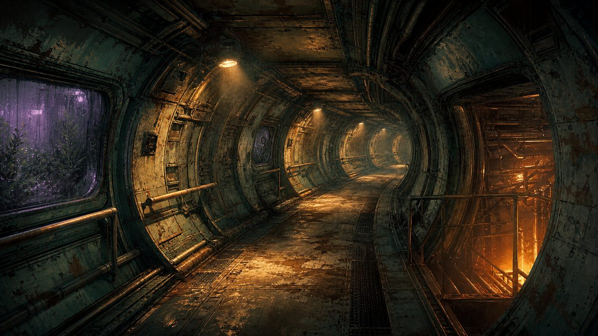
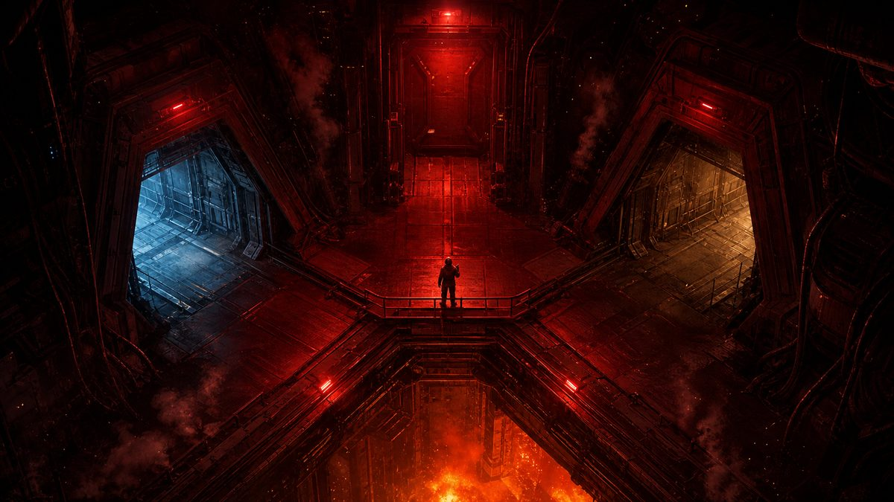
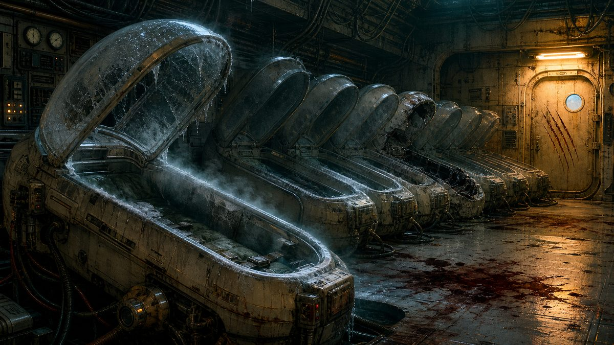

Плашка на арте · как это выглядит
Коридор — три хода открыто, ключ-карты пока нет

Глава I
Коридор сектора B
· ключ-карты нет · Ковач выслушал
1
Зайти к Ирис в оранжерею
2
Спуститься к реактору
3
Пройти на шлюзовую палубу
Точка невозврата — три финала прямо на картинке

Глава III
Точка невозврата
· сигнал известен · техник спасён
1
Улететь на шлюпке
2
Остаться и держать станцию
3
Отдать энергию сигналу
Медотсек — состояние по умолчанию

Глава I
Медотсек · время неизвестно
· сумка: Мультитул · решений: 0
1
Сколько я проспала?
2
Сначала осмотреться
3
Проверить скафандр